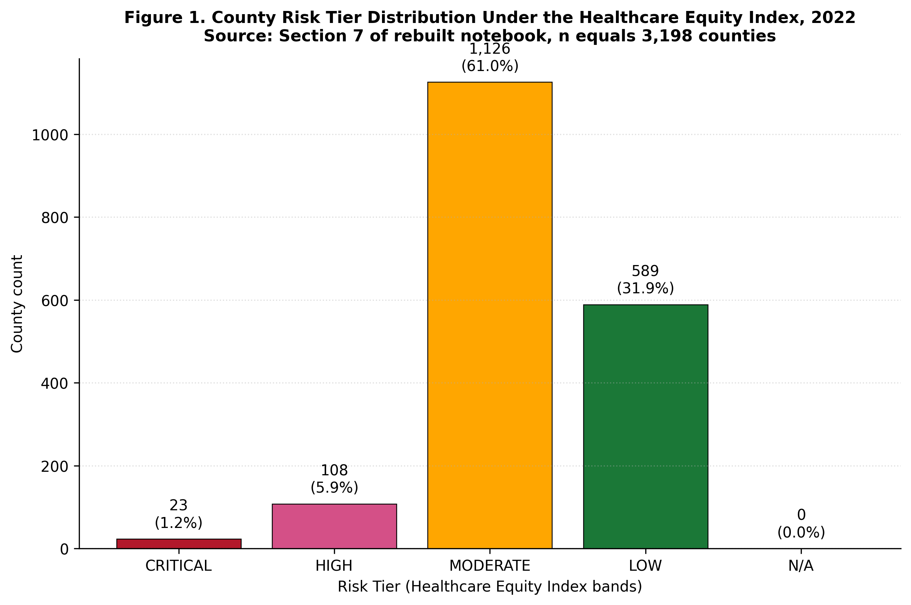
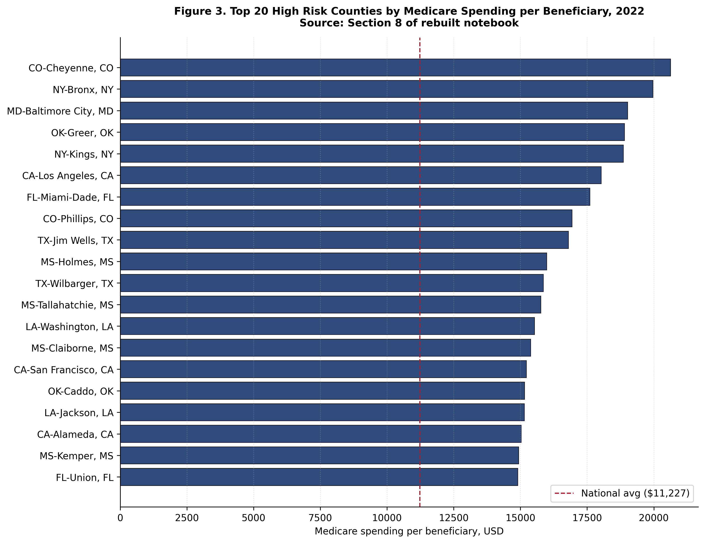
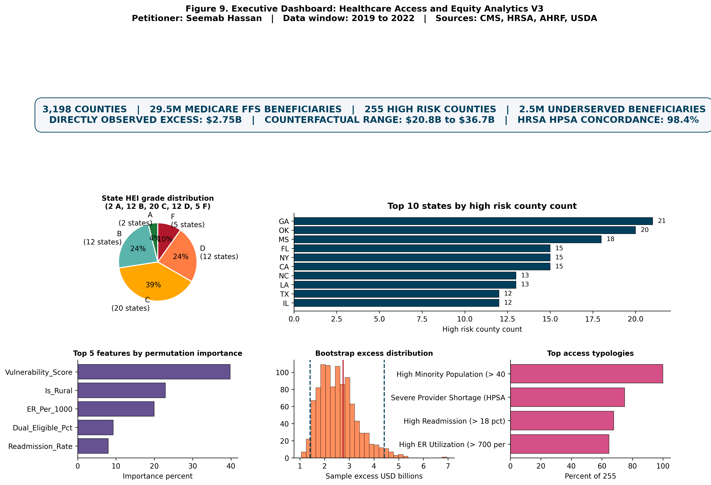

Healthcare Access and Equity Analytics
A county level Medicare access and equity framework analyzing all U.S. counties from 2019 through 2022. The system identifies high risk counties where Medicare spending patterns indicate access disparities, computes observed versus counterfactual excess using two independent methods, and provides per state aggregation for federal program integrity targeting.
Methodology
The analytical universe consists of 3,198 U.S. counties in 2022, covering 29,538,265 Medicare FFS beneficiaries. The longitudinal universe extends from 2019 through 2022, producing 12,785 county year observations across 3,206 unique FIPS codes pooled across years.
National baselines for 2022 establish the reference distribution: mean Medicare payment per beneficiary of 11,227.13 dollars and median of 11,006.43 dollars. The observed per beneficiary spending range across counties extends from 5,035 dollars to 32,264 dollars, a 6.41 fold spread.
Two independent excess computation methods are applied. The V1V2 method computes excess against the national distribution. The state peer median method computes excess against the median of counties within the same state, controlling for state level cost structure variation. Both methods are reported transparently rather than selecting whichever yields the larger headline figure.
Key findings
The high risk county set consists of 255 counties representing 8.0 percent of the analytical universe and serving 2,484,783 Medicare FFS beneficiaries. The directly observed excess using the V1V2 method is 2.748 billion dollars; using the state peer median method, 6.625 billion dollars.
High risk counties average 12,243.55 dollars per beneficiary in Medicare spending versus 11,137.48 dollars in low risk counties, a per beneficiary gap of 1,106.07 dollars.
The top state by high risk county count is Georgia with 21 counties, followed by Oklahoma (20), Mississippi (18), Florida (15), California (15), New York (15), Louisiana (13), North Carolina (13), Texas (12), and Illinois (12).
HRSA validation provides external concordance for the high risk county identification, supporting independent cross verification of the analytical results against an established federal access dataset.
Selected figures



Verification
Every numerical claim in this project traces to a persisted result file in the public rebuild repository, and the project has passed independent verification by a general purpose reviewer agent. Independent reviewers can reproduce the county universe, the national baselines, the observed versus counterfactual excess computations, the high risk county identification, and the per state aggregation from the same CMS Medicare Geographic Variation Public Use File and HRSA Area Health Resources File.